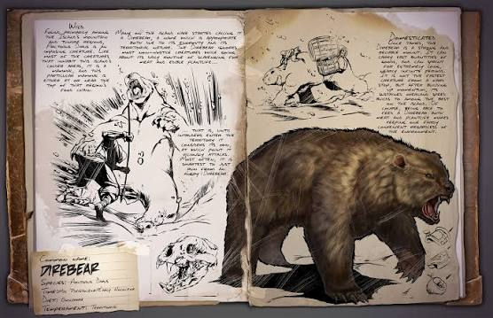

Primera aparición: Temporada 6 - prólogo
Tamaño (adulto): Longitud - 6 metros, Altura: 2 metros
Hábitat: LA ISLA, EL CENTRO, VALGUERO, RAGNAROK, FJOLDUR, TIERRA, GENESIS
Dieta: Carnívora
Comportamiento: Agresivo
Nivel de amenaza: Media, evitar si es posible
Nivel de pelea: 600